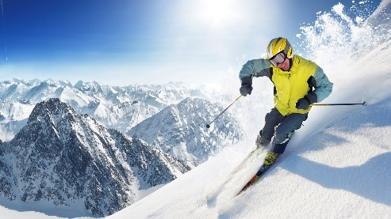

Skiing in the Alps
-Majestic Scenery
-Diverse Terrain
-Apres-Ski Culture
Skiing in the Alps offers breathtaking panoramic views of snow-capped peaks, picturesque valleys, and charming alpine villages. The stunning natural beauty provides an unforgettable backdrop to your skiing experience, enhancing the joy of gliding down the slopes.
The Alps boast an extensive network of ski resorts catering to all skill levels, from beginners to expert skiers. With a wide range of slopes, including gentle runs for beginners, challenging black diamond trails for advanced skiers, and thrilling off-piste opportunities, there's something for everyone to enjoy.
Beyond the slopes, the Alps are renowned for their vibrant après-ski scene. After a day of skiing, you can unwind in cozy mountain chalets, enjoy delicious traditional cuisine, and socialize with fellow skiers over hot drinks or refreshing beverages. From lively bars to relaxing spas, the Alps offer a perfect blend of adventure and relaxation après-ski.
The Diverse Terrain

-Varied Slope Difficulty
-Off-Piste Opportunities
-Terrain Parks and Freestyle Zones
The Alps offer a wide range of slope difficulties, from gentle beginner slopes perfect for those just starting out, to challenging black diamond runs designed to test the skills of even the most experienced skiers and snowboarders.
Beyond the groomed trails, the Alps provide extensive off-piste terrain for adventurous skiers seeking untouched powder, steep chutes, and thrilling backcountry experiences. These areas cater to advanced skiers looking for a more challenging and unregulated skiing experience.
Beyond the groomed trails, the Alps provide extensive off-piste terrain for adventurous skiers seeking untouched powder, steep chutes, and thrilling backcountry experiences. These areas cater to advanced skiers looking for a more challenging and unregulated skiing experience.
Resorts and Cuisine
Swiss resorts offer world-class skiing against stunning mountain backdrops, accompanied by exceptional hospitality. After a day on the slopes, indulge in Switzerland's diverse cuisine, from hearty alpine classics like fondue to delectable Swiss chocolate. Reflecting a blend of French, German, and Italian influences, Swiss cuisine ensures there's something for every palate, making dining a memorable part of the skiing experience.